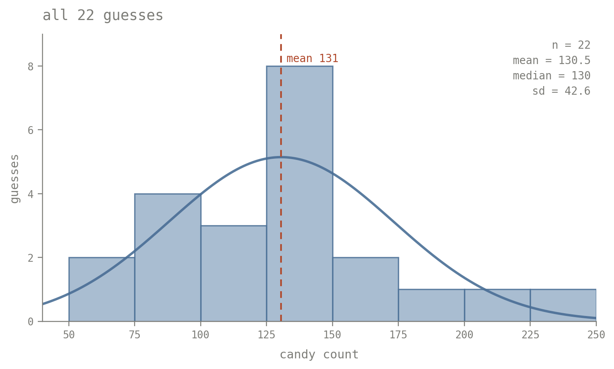
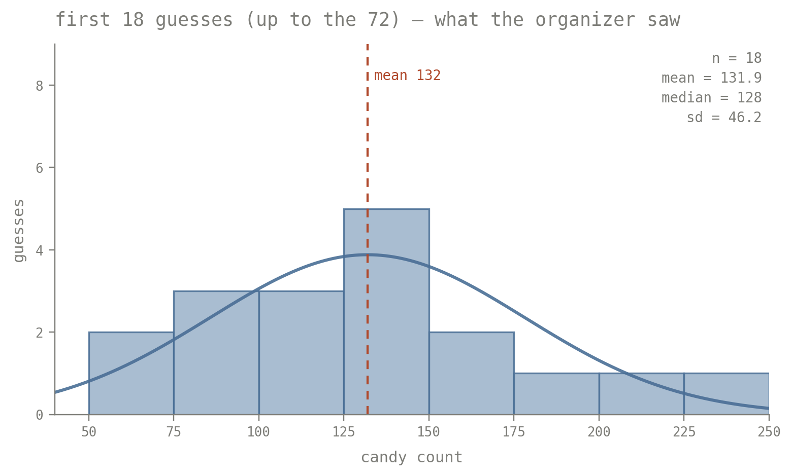

// the setup
I was at an event with friends when I found out a guess-the-candies-in-a-jar competition was running. A glass pitcher sat on the counter, packed to the neck with wrapped candy: tootsie rolls, starbursts, a couple of lollipops, nerds packets. Next to it, a slip of paper: estimate the count, one entry per person, closest wins.
I don't really gamble, but I do like an estimation problem. So I treated it as one.
// the math
First instinct: this is a volume problem. Using my iPhone 14 Pro as a ruler, I put the fill line at about 9.4 inches and the diameter at 3.5. A cylinder that size is
V = π · 1.75² · 9.4 ≈ 90 in³But a jar of candy is not 90 cubic inches of candy. Wrapped sweets with twisted ends pack loosely, so maybe 55 to 60 percent of that volume is actually candy and the rest is air. Then you divide by the average size of one piece. The jar was mostly tootsie roll midgees, which are tiny, with a few bigger items pulling the average up. Work it through and you land somewhere around 130 to 140.
So that was my number. About 135.
// the crowd
Before I submitted, I stayed close to the information. I stood by the entry sheet and read the other guesses, twenty-two of them, then collected the entries and built a distribution.
mean = 130.5 median = 130
Twenty-two strangers, guessing on their own with their own methods, landed almost exactly where my volume math did. This is the wisdom of crowds in one tidy data point. The individual errors are everywhere (someone wrote 236, someone wrote 57) but they are roughly symmetric, so they cancel, and the average converges on something sharp. Mean and median agreeing to within a point told me the distribution was balanced and the center was worth trusting.
At this point I was very confident. Two independent methods, same answer. Textbook.
// the signal
Then I remembered something. A few entries earlier, right as another participant wrote 72, the organizer, who actually knew the count, had glanced down the page and said two things out loud to me. Someone is really close. And most of you are overestimating.
At the time it barely registered. It was only now, sitting with a distribution centered on 130, that the second sentence landed. She was telling me the consensus, the thing my volume math agreed with, was biased high. In market terms she had dropped news that the asset was mispriced, in real time, pointing at a specific quote, and I had let it slide right past me.
The right move is a Bayesian update. You have a prior (the crowd, around 130, wide and uncertain) and a signal (someone who knows, pointing low and confident). You weight them by how certain each one is, and the confident one dominates. The closest low guesses were 96 and 97, so I figured the truth sat right around there. I slid into the gap nobody had taken and decided 95.
To sanity check, I rebuilt the distribution using only the guesses she had actually seen: everything from the first slip up to and including that 72, about eighteen of them. I wanted to see exactly what she saw.

Same shape as the full set, a fat cluster up near 130, with 72 and 57 stranded out on their own at the far left. I read the close one as the bottom edge of that cluster, 96 or 97, not the lonely 72 sitting way out in the tail. So I wrote 95.
I felt clever about it.
// the answer
The winner had guessed 72. Off by five. They had looked like an outlier on the low end the whole time.
I was off by eighteen. My "smart" update did beat the raw crowd (95 is closer to 77 than 130 is) but I still lost, and I lost in a specific, instructive way.
// what i got wrong
I updated in the right direction and then stopped too early.
"Most are overestimating" was not a nudge. It was the strongest piece of information in the room, because it came from the one person who knew the answer, and I treated it like a soft hint. I anchored on the nearest cluster of low guesses instead of asking what the sentence actually implied: that the truth was below most of the distribution. Not below the middle. Below almost all of it. The 57 and the 72 were not noise. They were the only people reading the jar correctly, and the organizer was pointing straight at them.
The packing assumption was the other half. Loosely wrapped candy with twisted ends leaves far more air than my 55 to 60 percent guess. I had set my prior too high before the signal ever arrived, so even after updating I was still dragging that bias along with me.
And the 95 itself was a hunch in a lab coat. I had a gut feeling, the truth is lower, and I dressed it as a clean normal curve with a tidy mean and a standard deviation, as if the decimals made it real. The math around it only ever confirmed the direction, that the crowd was biased high. It never confirmed the number. Any low guess would have been confirmed exactly the same way. I let clean formatting stand in for evidence and mistook precision for accuracy; its own kind of overconfidence, and arguably the more dangerous one, because it feels like rigor.
// why i'm writing it down
Because it is the cheapest possible version of a mistake I actually care about not making with real money.
A consensus can be sharp, agreed upon, internally consistent, and still wrong, all at the same time. When something credible says the consensus is biased, the size of your reaction has to match the credibility of the source, not your own comfort level. I was comfortable near the crowd, so I drifted back toward it. The person who won committed to what the jar was telling them and did not flinch when their number looked silly next to everyone else's.
Estimation gets you to the right neighborhood. Knowing when to abandon the neighborhood, and when to stop polishing a number that was only ever a guess, is the harder skill, and I clearly do not have it yet. But the jar only cost me one guess to find that out.